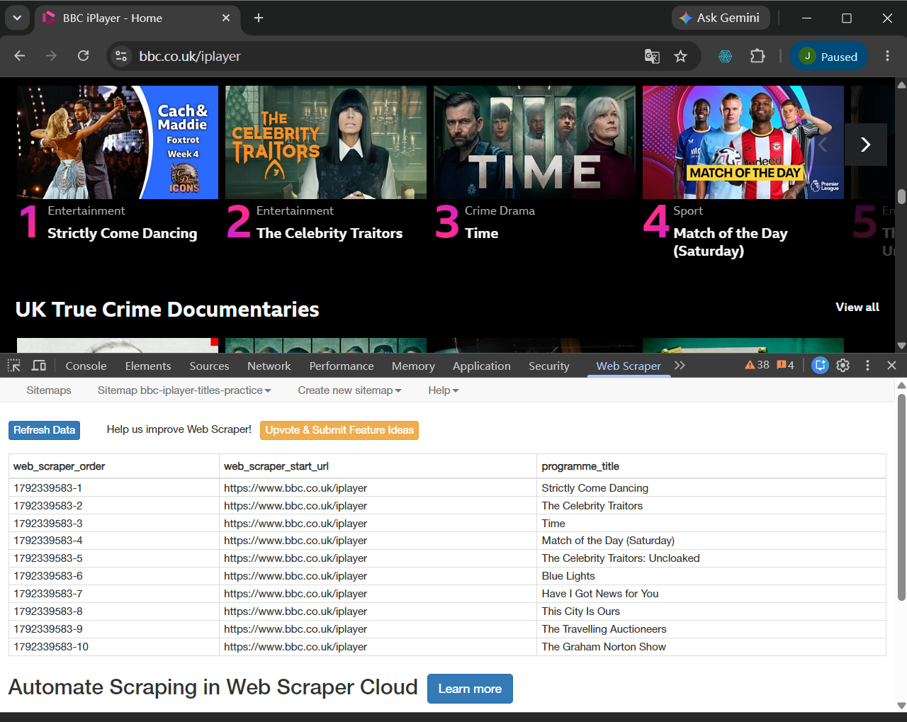

I'll do my best to complete these tasks and continue improving.
I will use this website to share my work and reflections.
This week, I followed the teacher's guide and created a basic website using Visual Studio Code. I created a stylesheet using CSS, uploaded the website files to GitHub, and then used GitHub Pages to publish my portfolio website.
Using the software was not as difficult as I had expected. However, the biggest obstacle for me was English. I found it difficult to follow the teacher's explanations, and I sometimes struggled to understand technical terms. As a result, I need to spend more time studying after class. Although this is challenging, I think I can manage it.
Through this practical activity, I began to understand the basic structure of a website. I realised that the content and structure, visual style, and publishing of a website are separate parts of the process. CampusPress is a convenient content management system with ready-made themes and visual tools. By contrast, using Visual Studio Code to edit HTML and CSS gives me more freedom and control over details. I chose VS Code because I want to improve my web development skills.
This week’s classroom exercise gave me my first opportunity to fully attempt using a web scraper to extract programme titles from the BBC iPlayer homepage. I began by selecting the recurring programme cards, then configured the title selector, and finally ran the scraper, resulting in a data table containing 10 programme titles.
In the process, I realised that web scraping is not simply a matter of copying the text visible on the screen, but rather involves identifying elements within the webpage’s code and instructing the tool where to extract the information from. Initially, the preview results were blank. It was only after I checked and adjusted the selector that I successfully extracted the titles.
This exercise presented a certain degree of difficulty for me, but the main challenge remained at the language level. I intend to continue practising my English after class and will also use the workshop materials uploaded by the tutor for further practice.

At last week’s workshop, the tutor guided us through a step-by-step discussion of the purpose, ethics, sources, gaps and methods of data collection, placing particular emphasis on ethical issues. Our group chose Scenario 1, which aims to help the Faculty of Arts and Humanities understand how students use generative AI.
I was responsible for collecting data on which AI tools students use. As students’ discussions on social media about using AI to complete assignments may raise issues of academic integrity, I did not use web scraping but instead compiled data from publicly available survey reports. I found that there is not a great deal of such data, and there is a particular lack of data on Chinese students’ use of Chinese AI tools: surveys from the UK and the US do not mention DeepSeek or Doubao, whilst the Chinese data do not specifically target international students.
When categorising the data, I listed only five mainstream tools separately, grouping the rest under ‘Other’, as there was too little data on niche tools for them to be of much value. I also learnt how to convert text into numerical codes to facilitate subsequent statistical analysis.
This has given me a better understanding of how data is categorised and labelled.
This week's workshop focused on data visualisation. In the first part, our group looked back at how we had collected our data the week before and discussed the difficulties with the tutor, mainly privacy and ethics. Data on students' use of AI often involves personal information and academic integrity, so we could only use published, aggregated data.
In the second part, the tutor asked us to try making a pie chart in Excel. I managed to make one, but soon realised that our data was not suitable for a pie chart. A pie chart shows how a whole is divided into parts, but in the surveys students could use more than one AI tool, so the percentages for all the tools add up to more than 100%. The pie chart was therefore only practice, and a bar chart would suit this kind of data better.
I also realised that putting data from different sources in one chart could mislead readers. Each survey asked different people in different ways, so placing the numbers side by side suggests that they can be compared directly. If they are shown together, they need to be grouped by source, with a note on who each survey asked.
My main takeaway this week is that, before making a chart, I need to think about who the audience is and what they need to learn from it. Charts are not neutral: the choice of chart and the way the data is arranged both shape the conclusions readers draw.